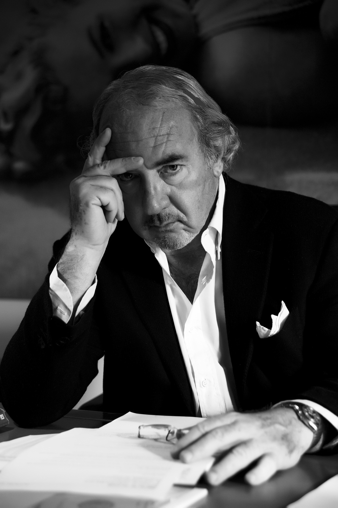

Avv. Michele Lo Foco
Esperto in diritto d'autore e cinematografico
Con oltre 40 anni di esperienza nel settore legale, l'Avv. Michele Lo Foco ha contribuito alla crescita e alla regolamentazione del settore cinematografico e audiovisivo. Ha ricoperto incarichi di rilievo, collaborando con istituzioni pubbliche e private per la tutela dei diritti d'autore e per lo sviluppo delle politiche culturali.
Scopri di più su linktr.ee
🎓 Formazione e Inizio della Carriera
- Laureato in Giurisprudenza presso l'Università di Parma (1971).
- Procuratore legale (1974) e avvocato (1980).
- Specializzato in diritto commerciale e problematiche societarie, con esperienze negli Stati Uniti e presso il Consiglio Nazionale del Notariato.
📜 Esperienze nel Settore Culturale e Cinematografico
- Presidente della 1ª Commissione Esperti del Ministero del Turismo e Spettacolo (1981-1985; 1988-1992).
- Consigliere di Amministrazione di Cinecittà S.p.A. (1990-1993) e Cinecittà Holding (2002-2005).
- Curatore della nascita di Video Music (1983-1984).
- Consulente per Rai 1 e Direzione Generale Rai Fiction (1994-1996; 2009-2011).
🏛️ Incarichi e Attività Istituzionali
- Docente presso La Sapienza e Link Campus University su diritto d’autore e gestione cinematografica (2006, 2010, 2017).
- Membro del Consiglio Superiore della Cinematografia e Audiovisivo (dal 2017, riconfermato nel 2024).
- Consulente Tecnico di Ufficio del Tribunale di Roma per la cinematografia (dal 2008).
🏅 Riconoscimenti e Pubblicazioni
- Cavaliere (1989) e Cavaliere Ufficiale della Repubblica Italiana (1992).
- Autore di "Tutta la verità sul mondo del Cinema" e "Il diritto d’autore: storia, evoluzione, regole, futuro".
- Scrittore di articoli e saggi su diritto, economia e settore cinematografico.